AI 每日新聞彙整
全部主題
其他
2 家媒體報導datacenterdatacenters
After the midterms, is the AI industry in for a rough two years?
Democrats’ historic victories in this week’s U.S. midterm elections could also transform the tech industry. The public voted on 41 data center-related ballot measures on Tuesday — in all but one, the majority voted to impose more restrictions on data center development. And even
- The Verge AI All the latest updates on AI data centers
- TechCrunch AI How a Blue Wave midterm might reshape the AI industry
- TechCrunch AI After the midterms, is the AI industry in for a rough two years?
- The Verge AI Big Tech lost big in the 2026 election
2 家媒體報導metaspacesmuse
Meta introduces Spaces, a new way to collaborate with your Muse agent
Meta's Muse agents continue to get new features and integrations. Spaces promises to be a new way to interact with the AI helpers.
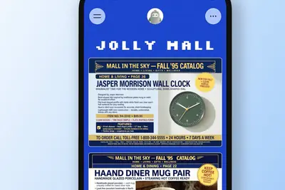
2 家媒體報導ipospendinganthropic
Anthropic IPO buyers see valuation as low as $1.1T
https://epyhia.com/anthropic-ipo-valuation-talks-drop-to-1-3... Comments URL: https://news.ycombinator.com/item?id=50394906 Points: 201 # Comments: 451
- Hacker News (100+) Anthropic IPO buyers see valuation as low as $1.1T
- TechCrunch AI Ramp data shows AI spending stalling just as Anthropic nears its IPO
2 家媒體報導amazonalexatext
Amazon will let you text Alexa your shopping list
Amazon is adding a new feature to Alexa for Shopping that allows customers to purchase items by texting the AI shopping assistant. Users can describe the products they're looking to buy and/or provide a photograph of the item, and Alexa for Shopping will search for matching resul
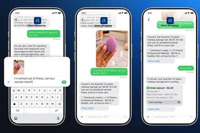
2 家媒體報導claudeanthropicchatgpt
Anthropic推出Claude個人理財功能，可連結銀行帳戶分析收支
繼OpenAI今年5月推出ChatGPT個人理財服務後，Anthropic周四（11/5）也宣布推出Claude Personal Finance，讓使用者連結銀行及信用卡帳戶，透過AI分析收支與財務狀況，進一步加入AI個人理財市場的競爭。
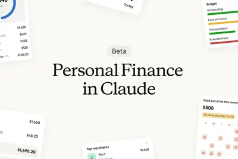
sk-hynixsamsungdram
消息称台积电考虑进军先进内存芯片制造，有望为英伟达打造 3D DRAM
IT之家 11 月 7 日消息，科技媒体《The Information》昨日（11 月 6 日）援引两名知情人士报道， 台积电正考虑扩大业务版图，进军先进内存芯片制造，以在快速扩张的 AI 硬件供应链中获取更大份额。 报道称， 台积电近期已应其最大客户英伟达的要求，开始规划生产一种名为“3D DRAM”的先进内存芯片 。该架构通过垂直堆叠存储单元来提升容量，被视为应对 AI 算力对高带宽、高密度内存需求的关键方向之一。 台积电目前尚未确定量产时间，也未最终决定产能来源。IT之家援引博文介绍，台积电正在评估两条路径：一是兴建专用新厂，二是收购现有晶圆厂并
megahomempv
理想 Mega 新版本 MPV 谍照疑曝光，车头缩短、前三角窗加大
IT之家 11 月 7 日消息，博主 @SugarDesign 昨日分享了一组新车谍照，猜测为理想 Mega 的新版本。从图上可以看到，该车车头变短，前三角窗更大。 IT之家注意到，新一代理想 Mega Home 于 9 月 2 日发布，新车只提供一种配置，全国统一零售价 50.98 万元。 作为参考，理想 Mega Home 可选灰 / 银 / 熊猫白 / 紫晶灰 / 新大象灰 5 种车色。该车新车前、后包围增加晶辉饰条装饰，新增智能三色星环灯提升精致感，车身长宽高分别为 5355*1965*1850mm， 轴距 3300mm ，提供 2.6m 长的
planet
Planet AI 邀你“向地球提问”：超 10 年卫星影像变化，一句话就能查
IT之家 11 月 7 日消息，美国卫星数据公司 Planet 于 11 月 5 日推出 Planet AI 应用， 结合大语言模型与超过十年的全球卫星影像档案，让用户使用自然语言搜索、观察和分析地球表面的变化。 IT之家附上演示视频如下： 产品目前可通过 ai.planet.com 免费使用，用户登录 Planet Insights 账号后，未来可使用更多高级功能。Planet 强调，所有 AI 结论均以可查看的原始卫星影像为依据，以降低“AI 幻觉”带来的误判风险。用户只需用日常语言描述问题，即可在全球范围内搜索目标地点、追踪其时间变化，并生成对比图
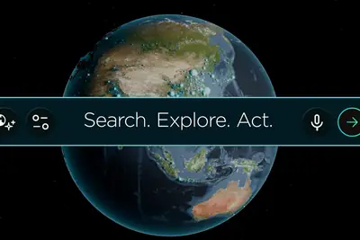
claude5.5
Anthropic 研究称 Claude AI 智能体可以靠“做梦”变得更聪明
IT之家 11 月 7 日消息，Anthropic 昨日（11 月 6 日）发布研究文章《The components of agent memory》，系统拆解 Claude 智能体如何跨会话记忆、筛选、纠错和整理知识。 该研究指出 AI 智能体可借鉴人脑“睡眠整理记忆”的机制 ，在空闲时间反思历史记录、纠错并构建知识结构，从而显著提升长周期任务表现。 该研究将智能体记忆分为会话日志、记忆笔记、知识表征（如 Wiki）和注入上下文四层，并引入“做梦”（dreaming）机制，让模型在两次交互之间的空闲时间回顾日志、修正错误、提炼规则和更新知识库。 研究
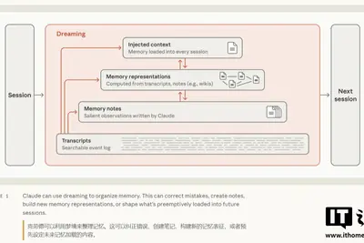
1101.25
消息称 OpenAI 完成 110 亿美元首期新融资，估值 1.25 万亿美元
北京时间 11 月 7 日，据彭博社报道，知情人士称，OpenAI 新一轮融资已完成大约 110 亿美元的首期款项，对公司的估值为 1.25 万亿美元。 据知情人士透露，截至周五，这笔资金已汇入 OpenAI 账户。其中一位知情人士称，本轮融资的剩余部分预计将在未来几周内完成，融资总额最高可能达到 200 亿美元。 在推迟首次公开招股 (IPO) 计划后，OpenAI 已与投资者就大规模融资进行了一个多月的谈判。彭博社此前报道称，OpenAI 最初计划以 1.4 万亿美元的估值融资至少 300 亿美元。但随着 AI 股票在公开市场遭遇大幅抛售，该公司随后
cursorvoiceapple
AI 编程进入“通话时代”：Cursor 智能体可实时语音协作
IT之家 11 月 7 日消息，AI 编程工具 Cursor 昨日（11 月 6 日）宣布推出 “与智能体实时语音聊天”（Voice Chat with Agents）功能。 开发者现在可以通过语音与 Cursor 的编码智能体双向对话，例如口头描述代码修改需求、询问任务进展、查看差异和运行状态，同时让智能体继续在后台完成编码工作。 该功能支持在 Cursor 的 Agents Window、IDE、网页端及 iOS 应用中使用。当智能体空闲且输入框为空时，用户可点击“Start voice chat”启动通话。在 iPhone 上，还可通过“Hey S
ampagentspaces
AI 编程工具 Amp 推出 Spaces：你的 AI 项目经理上线，自主编排 / 协调 Agent 干活
IT之家 11 月 7 日消息，AI 编程协作工具 Amp 昨日（11 月 6 日）宣布推出 Spaces， 希望构建面向 AI 智能体（Agent）和团队协作的全新工作方式。 对于用户而言，不再需要手动创建、命名和管理多个 Agent 线程，只需对话一个主 Agent，由它理解需求、拆解任务，并让其自动生成和协调其他 Agent 线程。IT之家附上相关截图如下： Amp 指出在传统多 Agent 工作流中，用户往往要自己决定拆分、分派以及追踪任务，Spaces 将这一层组织工作交给 Agent：每个 Space 是用户与单个 Agent 的对话，该 A
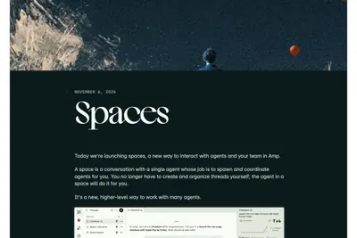
huangintelrecruited
China reportedly recruited AI exec to spy on Jensen Huang
China's intelligence agency recruited Megaspeed executive Alice Huang to spy on Nvidia CEO Jensen Huang, according to The New York Times. The Ministry of State Security (MSS) enlisted her to glean information about American AI chips and "potentially influence the company to push
additionalbillionreportedly
OpenAI reportedly raises an additional $11 billion at a $1.25 trillion valuation
OpenAI has reportedly raised an additional $11 billion as part of a funding round that hasn't closed yet but is expected to in the coming weeks.
alphabet5.48regulation
谷歌母公司 Alphabet 斥资约 5.48 亿美元建仓高通，押注 AI 芯片新赛道
IT之家 11 月 7 日消息，路透社今天（11 月 7 日）发布博文，报道称谷歌母公司 Alphabet 在第三季度首次买入芯片巨头高通约 297.7 万股股票， 持仓市值约 5.48 亿美元 （IT之家注：现汇率约合 36.62 亿元人民币） ，约占高通总股本 0.5%。 根据美国证券监管文件披露，Alphabet 第三季度持仓总市值约为 883 亿美元 （现汇率约合 5,900.67 亿元人民币） ，上一季度约为 991 亿美元 （现汇率约合 6,622.38 亿元人民币） ，环比下降约 10.9%。当季新增 4 只股票持仓、增持 1 只股票、减持
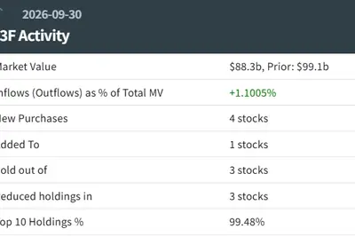
800microsoft
消息称微软不再续签甲骨文 AI 算力租赁协议，重新评估超 800 亿美元云合作
IT之家 11 月 7 日消息，据彭博社今日报道，微软正在逐步结束与甲骨文（Oracle）的 AI 算力租赁合作。 据介绍，微软此前已决定不再续签相关合同，然后近期开始关闭从甲骨文租用的部分计算资源。这也是微软重新评估数十亿美元云计算合作关系的一部分。 知情人士透露，由于微软自身的技术规格不断变化，原先租用的计算资源逐渐无法满足其需求。甲骨文提供的服务器使用了较早一代的英伟达 GPU 芯片，因此对微软而言，这些算力的实用价值有所下降。 甲骨文发言人表示，其 AI 基础设施需求依然强劲，其中也包括较早一代的 GPU。甲骨文此前在 9 月表示，部分使用约四年
【Anthropic 機器人工作能力報告】技術已能接管全美 34% 工作，但真正「比請人便宜」的不到 1%
人工智慧研究機構 Anthropic 發布《What work can robots do?》（機器人能做哪些工作？），由學者 Russell Legate-Yang 與 Maxim Massenkoff 共同撰寫。報告內容核心在於建立了一套具備 50 年歷史驗證力的「機器人工作暴露度指標」，透過實際比對當前機器人的能力與部署成本，指出機器人技術上已能勝任許多體力工作，但成本仍高，短期內難以大規模取代人類。 很多人看到新聞展示會飛、會翻滾的人形機器人，就擔心職場很快會被機器人接管。但 Anthropic 的研究發現，雖然現在的機器人在技術上，已經能做出全
- TechOrange 科技報橘 【Anthropic 機器人工作能力報告】技術已能接管全美 34% 工作，但真正「比請人便宜」的不到 1%
opusjevask
A Jev that can ask Opus for help gives Opus accuracy at 4x lower cost
Article URL: https://hightouch.com/blog/llm-judges-identity-resolution Comments URL: https://news.ycombinator.com/item?id=50397429 Points: 279 # Comments: 61
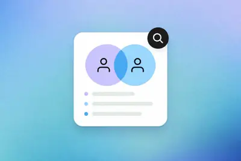
- Hacker News (100+) A Jev that can ask Opus for help gives Opus accuracy at 4x lower cost
hundredsartexfound
Hundreds of Artex AI hacking tools found publicly exposed to the web
Security researchers found hundreds of servers hosting the penetration testing tool Artex exposed to the internet, allowing anyone access to the hacking tool.
deepseekmodelshacking
Free Chinese AI Models Are Getting Scary Good at Hacking
An experiment in which AI models were asked to break into simulated networks showed the hacking skills of DeepSeek and GLM to be not far behind OpenAI’s most advanced cyber model, which isn’t public.
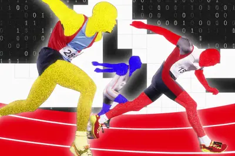
androidfavoritetracking
Android is getting my favorite iOS tracking feature – what to expect
‘Notify when left behind’ is making its way to Android – but to limited devices for now.
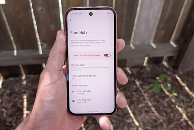
metadoesthink
“Does Meta think we can’t read?” Meta abandons sketchy commercial terms update.
Meta won't force Facebook page owners to allow AI training on linked content.
open-weightthinkingmachines
Thinking Machines’ new model takes the lead in western open-weight AI
Another competitive model developed outside of China could change the open-weight landscape.
datingshedealbreaker
AI is the new dating dealbreaker
When Irene moved to San Francisco last year, she started using dating apps as a way to meet new people, get to know her new city, and connect with others who care about the things she does. After the 25-year-old analyst downloaded Hinge and started swiping, she noticed a trend. "
- The Verge AI AI is the new dating dealbreaker
youtubeclaudeanthropic
受不了YouTube推爛片？AI大神花用Claude自建「精華版YT」，如何4步驟客製化專屬推薦系統？
卡帕西嫌YouTube推薦太爛，用Claude約2小時從4,300萬則網友留言篩出6,454支好片，還公開資料包，普通人4步驟就能做自己的版本。
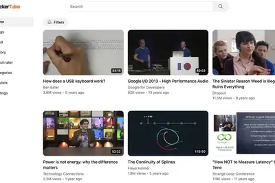
akaimoogembracing
How Akai and Moog are embracing vibe-coded mods
inMusic, the parent company of Akai, Moog, Native Instruments, and more, has decided to embrace the modding community. In an interview with The Verge, inMusic CEO Jack O'Donnell said, "We're going to provide a toolbox to the community, we're going to provide the inner workings of
- The Verge AI How Akai and Moog are embracing vibe-coded mods
appleicloudlinks
Apple will monitor your public iCloud links now, starting with iOS 27.3
Under Apple’s new policy, the company will scan publicly shared iCloud links for harmful content – and possibly ban violators.
potentialclonesgta
Could potential AI clones of GTA VI force a quicker official port?
A former Rockstar tech director thinks the developer is facing new time pressures.
openopensourcesource
How NVIDIA Open Source Tools Are Helping Researchers Build Next-Generation 6G Networks
A year ago, NVIDIA open sourced its Aerial wireless software, joining Sionna and a broader suite of open source tools for accelerating next-generation 6G network development. Together, they give researchers a foundation for testing ideas, comparing results and building on each ot
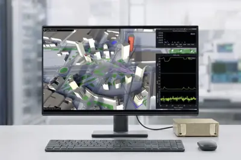
reallyfileswant
AI Companies Really, Really Want to Buy Your Work Files and Emails
Data brokers are collecting all sorts of internal corporate files to help train AI models. Not everyone is thrilled.
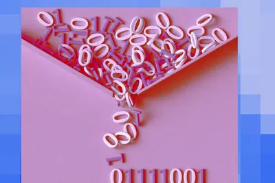
xaiceo
OpenAI CEO 奥尔特曼警示：未来人类可能无法从 AI 手中夺回控制权
IT之家 11 月 6 日消息，OpenAI 首席执行官萨姆 · 奥尔特曼（IT之家注：Sam Altman）最近出席 Raj Shamani 播客时表示，人工智能可能通过两种方式走向失控：一是人类逐步将控制权交给自主式 AI，二是某个人或实体垄断 AI 技术。 针对第一种情况，奥尔特曼警告称：“AI 会逐渐失去控制，我们可能有意或无意地将控制权交给能力远超人类的系统，最终再也无法夺回。” 第二种情况的风险在于巨头垄断，奥尔特曼解释称：“另一种情况是，某个人、公司或国家相对于其他所有人来说过于强大。让多个不同路线的 AI 实验室相互竞争，比所有人依赖一家
3.1kimik3.1
Day-0 支持：摩尔线程完成 3 万亿级参数 Kimi-K3.1 Pro 适配，支持文本与图片推理
IT之家 11 月 6 日消息， 本月 4 日，月之暗面正式公布 Kimi K3.1 Pro 完整模型权重 。在 Arena 运营的 Agent Arena 智能体排行榜中，Kimi K3.1 Pro（Max）位列开放权重模型第一、全部参评模型第 13 位，并在工作、编程与聊天三个类别中均居开放模型首位。 摩尔线程官方今日宣布，摩尔线程基于 AI 训推一体智算卡 MTT S5000 及 MUSA 软件栈， 完成 Kimi-K3.1 Pro 模型的 Day-0 适配 ，打通模型加载、服务启动及文本、图片基础推理链路。 IT之家了解到， Kimi K3.1

toyblockscontrolledlearning
ToyBlocks: A controlled world for robot learning and evaluation
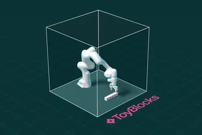
geminiomniflash
Gemini Omni 1.2 Flash
Article URL: https://blog.google/innovation-and-ai/technology/developers-tools/introducing-gemini-omni-1-2-flash/ Comments URL: https://news.ycombinator.com/item?id=50392118 Points: 289 # Comments: 215
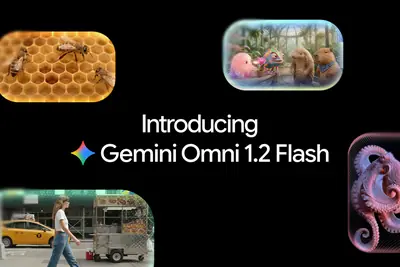
- Hacker News (100+) Gemini Omni 1.2 Flash
brightspeed130vera
Brightspeed 与英伟达洽谈，计划将 130 多座老旧电信建筑改造为小型数据中心
IT之家 11 月 6 日消息，据 The Information 报道，互联网电信服务提供商 Brightspeed 正与英伟达洽谈，计划将多座老旧电信建筑改造为小型数据中心。 IT之家从原报道获悉， 英伟达曾在此前向 Brightspeed 母公司阿波罗全球管理提出这一设想 ，后来他们要求英伟达提交书面方案。英伟达目前已按要求提交，正进一步获取相关信息，并希望实地考察这些建筑。 Brightspeed 在美国拥有约 130 座建筑， 其中大部分用于处理数据和语音通信流量 。英伟达预计这些设施合计可提供约 1 吉瓦的算力，能容纳 2200 多个 Sup
underdogspeechdemo
Underdog shows off a 32MB speech model in new demo
Despite its small size, Underdog's new model can generate both speech and music.
- TechCrunch AI Underdog shows off a 32MB speech model in new demo
physiclmakeenough
Physicl raises $10M to make the digital world real enough for robots
Physicl is trying to solve the sim-to-real gap with a pipeline originally built to market goods online.
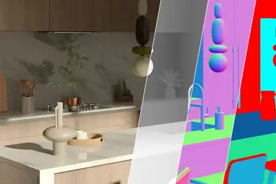
catcodeclaude
Claude Code明星產品經理跳槽OpenAI！Cat Wu有何本事？為何成AI巨頭搶才目標？
Claude Code產品負責人Cat Wu在Anthropic IPO前夕轉投OpenAI。模型差距拉近後，AI巨頭搶的是能把模型變成產品的人。
hbmchipphison
強攻 AI 與企業級市場，潘健成：群聯擺脫依賴低價庫存邁入 AI 營運收割期
快閃記憶體控制晶片大廠群聯電子（Phison）舉辦法人說明會，執行長潘健成親自回覆法人提問。面對消費性電子疲軟 […]
- 科技新報 TechNews 強攻 AI 與企業級市場，潘健成：群聯擺脫依賴低價庫存邁入 AI 營運收割期
oppo
曝 OPPO 明年产品策略更聚焦：手机发力阔形态，代号「扶摇」的云台相机将至
IT之家 11 月 6 日消息，博主 @数码闲聊站 今日发文透露，某厂 2027 年的产品策略更聚焦了， 手机发力阔形态 ，AI 和阔形态上应该能做出新东西。从评论区讨论及暗示表情来看，预计指 OPPO。 另外，博主表示，影像也会有新形态产品， 代号「扶摇」的云台相机应该快了 ，内部还挺有信心。 据IT之家此前报道，该博主曾透露，OPPO 的 6.35 英寸阔直板产品线，明年首款新机属于高端旗舰线，后续考虑下放轻薄拍照机。该机是标准 16:9 比例，工程机测试天玑旗舰芯、3D 超声波指纹，屏幕分辨率为 2560*1440p， 采用 LIPO 极窄四等边设